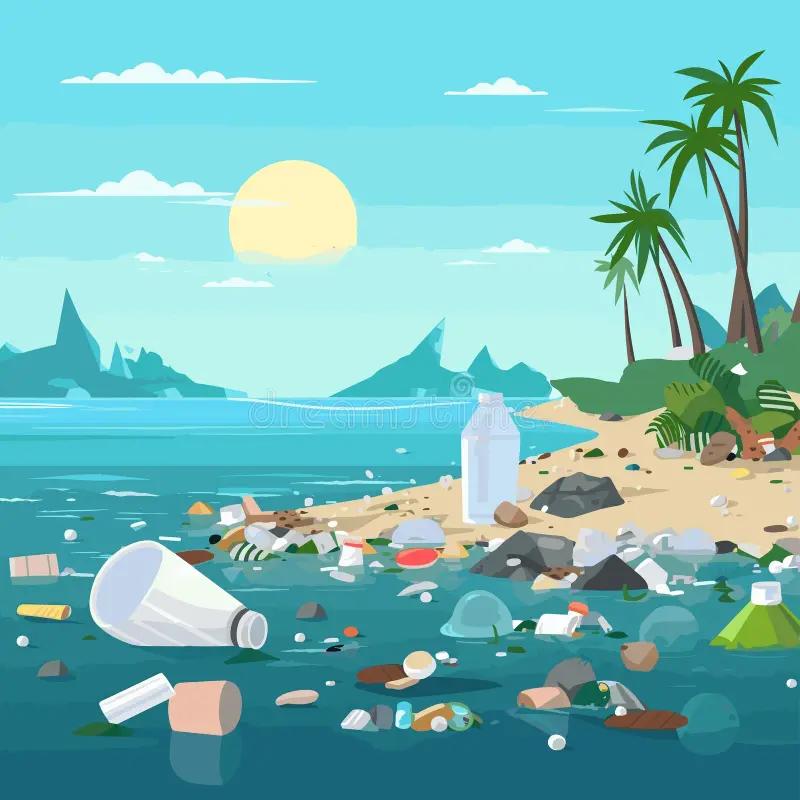
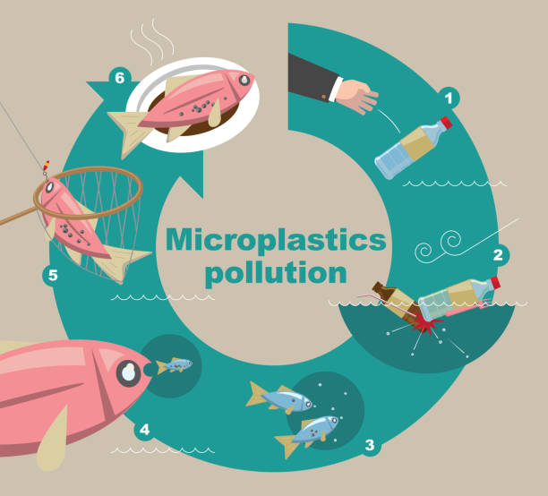
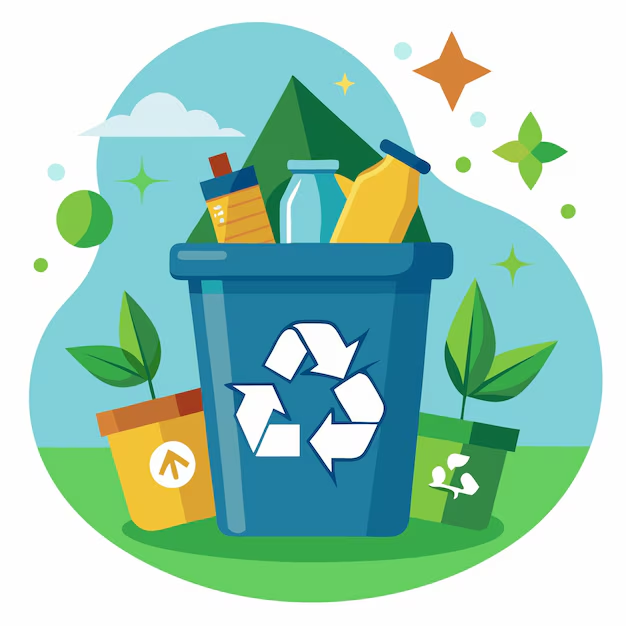
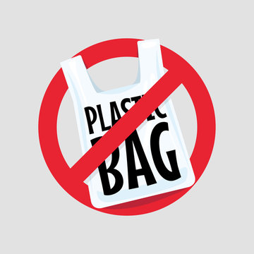

We are using too much plastic
NYC Households and businesses produce millions of pounds of plastic waste
We are spending millions of dollars managing that waste
Plastic Waste Counter
Estimated # of plastic items discarded since this page opened
0
Loading public litter data for the current NYC map view.



